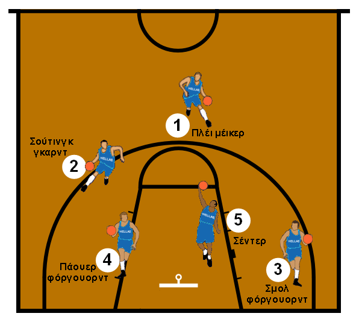

Διάρκεια του Αγώνα: 4 δεκάλεπτα (10 λεπτά το καθένα) για τη FIBA ή 4 δωδεκάλεπτα (12 λεπτά το καθένα) για το NBA. Σε ισοπαλία, ακολουθεί παράταση 5 λεπτών.
Αριθμός Παικτών: 5 παίκτες στο παρκέ, με έως 7 αναπληρωματικούς.
Στόχος του Παιχνιδιού: Να σκοράρεις περισσότερους πόντους από τον αντίπαλο. Καλάθι εντός πεδιάς: 2 ή 3 πόντοι. Βολές: 1 πόντος.
Διαστάσεις Γηπέδου: 28 x 15 μέτρα (FIBA) ή 28,65 x 15,24 μέτρα (NBA). Ύψος καλαθιού: 3,05 μέτρα.

Κανόνες Παιχνιδιού
Έναρξη και Επανεκκίνηση: Ο αγώνας ξεκινά με άλμα μπάλας (jump ball). Σε αλλαγή κατοχής, η μπάλα επαναφέρεται από το πλάγιο.
Χρονικοί Περιορισμοί:
24 δευτερόλεπτα: Σουτ από την ομάδα.
8 δευτερόλεπτα: Πέρασμα της μπάλας από τη μεσαία γραμμή.
5 δευτερόλεπτα: Ο παίκτης πρέπει να πασάρει αν πιέζεται.
3 δευτερόλεπτα: Όριο παραμονής στη ρακέτα του αντιπάλου.
Φάουλ και Ποινές: Έως 5 φάουλ (ή 6 στο NBA) ανά παίκτη. Μετά από 4 ομαδικά φάουλ, κάθε επόμενο δίνει βολές.
Βήματα: Ο παίκτης δεν επιτρέπεται να κάνει περισσότερα από 2 βήματα χωρίς ντρίμπλα.
Διπλή Ντρίμπλα: Δεν επιτρέπεται να σταματήσει τη ντρίμπλα και να την ξαναρχίσει.